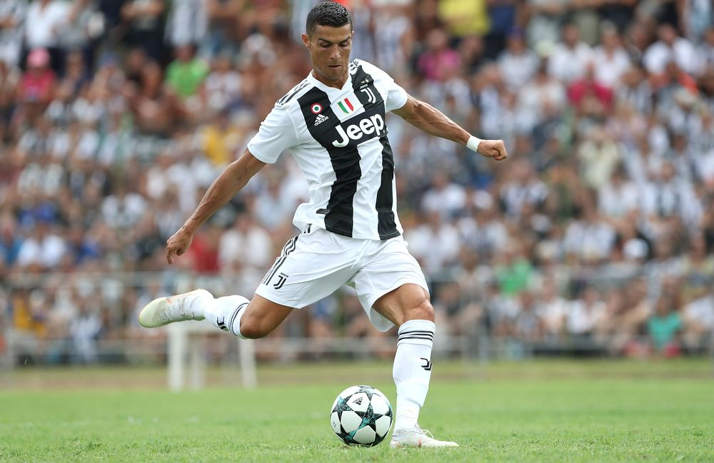

“I'm living a dream I never want to wake up from.”
Sports
Ronaldo
Christino Ronaldo

Cristiano Ronaldo dos Santos Aveiro GOIH ComM is a Portuguese professional footballer who plays as a forward for Premier League club Manchester United and captains the Portugal national team.